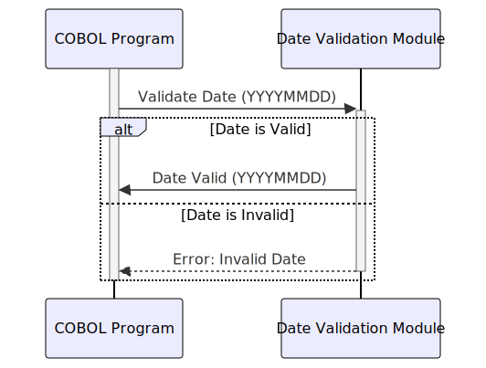

Gerado em: 1 de outubro de 2024
Título do Documento: Módulo de Validação e Padronização de Datas
Descrição Resumida:
Este código COBOL define um módulo reutilizável para validar e padronizar informações de data. Ele garante que as datas sejam logicamente válidas (por exemplo, mês válido, dia dentro do mês, tratamento de ano bissexto) e possam ser formatadas em um formato de saída consistente.
Histórias do Usuário:
Como analista de dados, preciso garantir que todas as datas usadas em relatórios e análises sejam precisas e consistentes, portanto, preciso de uma maneira confiável de validar e padronizar informações de data de várias fontes.
Épico Relacionado:
9 - Utilitários do Sistema
Requisitos Funcionais:
- Validação de Data:
- Validar os componentes de ano, mês e dia de uma data.
- Garantir que o mês esteja dentro do intervalo válido (1-12).
- Verificar se o dia está dentro do intervalo correto para o mês fornecido, considerando anos bissextos.
- Lidar com informações de século com precisão (por exemplo, ‘20’ para o século 21, ‘19’ para o século 20).
- Formatação de Data:
- Formatar datas validadas em um formato de saída padronizado (por exemplo, YYYYMMDD).
Requisitos Não Funcionais:
- Reutilização: O módulo deve ser projetado como um copybook COBOL para fácil inclusão em outros programas.
- Manutenibilidade: O código deve ser bem estruturado e documentado para facilitar a manutenção e as atualizações.
- Desempenho: A validação e formatação de datas devem ser eficientes, especialmente ao lidar com grandes volumes de dados.
Critérios de Aceitação:
- O módulo valida corretamente uma variedade de entradas de data, incluindo datas válidas e inválidas, anos bissextos e diferentes representações de século.
- As datas são formatadas com precisão no formato de saída especificado (YYYYMMDD).
- O tratamento de erros está em vigor para identificar e registrar valores de data inválidos.
- O módulo pode ser facilmente integrado a outros programas COBOL.
Melhorias de Código:
- Mensagens de Erro Detalhadas: Forneça mensagens de erro mais específicas para ajudar na depuração (por exemplo, “Mês inválido: XX”).
- Funções de Cálculo de Data: Considere adicionar funções para cálculos de data comuns (por exemplo, adicionar/subtrair dias, calcular a diferença entre datas).
- Opções de Configuração: Permitir a configuração do formato de data de saída.
Melhorias de Segurança:
- Limpeza de Entrada: Implemente a validação de entrada para evitar vulnerabilidades como estouro de buffer ou ataques de injeção.
Diagrama Conceitual:

–Made by “Smart Engineering” (by Compass.UOL)–